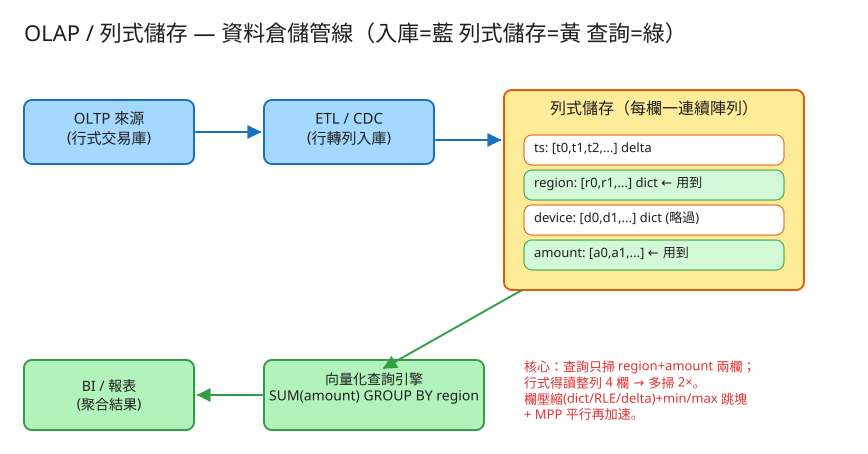

D 串流計算/儲存分發 建議 45 分鐘 Design an OLAP / Columnar Store
| OLTP（線上交易） | OLAP（線上分析） | |
|---|---|---|
| 典型查詢 | 「取出 id=42 這筆訂單的全部欄位」「更新這筆」 | 「過去 90 天各地區的營收總和」 |
| 觸碰的列 | 少數幾列 | 掃大量列（百萬～數十億） |
| 觸碰的欄 | 整列所有欄 | 只用其中幾個欄 |
| 讀寫 | 大量逐筆讀寫、要強一致 | 大量讀、批次寫、可最終一致 |
| 最佳儲存 | 行式（row-store） | 列式（column-store） |
SELECT SUM/AVG/COUNT/MIN/MAX(欄) ... GROUP BY 欄。| 指標 | 假設 | 推算 |
|---|---|---|
| 事實表列數 | 每日 5 億筆事件，存 1 年 | ~1800 億列 |
| 欄數 | 寬表 ~50 欄 | 單一聚合查詢常只用 2～4 欄 |
| 單欄原始大小 | 1800 億 × 8 bytes | ~1.4 TB / 欄（未壓縮） |
| 整表大小 | 50 欄 × 1.4 TB | ~70 TB（行式得全讀） |
| 列式只掃 2 欄 | 2 / 50 | I/O 降為 ~1/25，再乘壓縮可達 1/100+ |
# 批次入庫（ETL / CDC）
POST /api/load Body: { rows: 2000 } # 列資料 → 拆成各欄連續陣列
# 分析聚合查詢
GET /api/query?select=amount&groupby=region&agg=sum
→ {
"groups": [ { "key":"TW", "value":1237761.7, "rows":500 }, ... ],
"scan": { "columns_scanned":2, "total_columns":4,
"columnar_cells":4000, "rowstore_cells":8000,
"rowstore_saving_x":2.0 } # 行式要多掃幾倍
}
# 狀態 + 各欄壓縮統計
GET /api/state → { row_count, schema, columns:[{encoding, ratio}], overall_ratio }
真實系統用 SQL（ClickHouse / BigQuery）；介面本質都是「選哪幾欄 + 怎麼聚合 + 怎麼分組」，引擎據此只讀需要的欄。
同一份資料（4 欄）：
ts region device amount
1700000001 TW ios 120.50
1700000002 JP web 88.00
1700000003 TW android 301.20
行式（OLTP，每「列」連續存）：
[1700000001,"TW","ios",120.50][1700000002,"JP","web",88.00][...]
↑ 要算 SUM(amount) 也得把 ts/region/device 一起搬進來
列式（OLAP，每「欄」連續存）：
ts = [1700000001, 1700000002, 1700000003, ...] ← delta 編碼
region = ["TW","JP","TW", ...] ← 字典編碼
device = ["ios","web","android", ...] ← 字典編碼
amount = [120.50, 88.00, 301.20, ...]
↑ SUM(amount) GROUP BY region 只讀 amount + region 兩個陣列
✏️ 用 Excalidraw 開啟編輯（diagram.excalidraw） OLTP 來源(行式) ──ETL/CDC(行轉列)──▶ 列式儲存(每欄一連續陣列, 壓縮+分區)
│
向量化查詢引擎 ◀──┘ 只讀用到的欄
│ (欄裁剪 + min/max 跳塊 + MPP)
▼
BI / 報表(聚合結果)代表系統：ClickHouse、BigQuery、Snowflake、Redshift、Druid、Apache Parquet/ORC。
列式的第一性原理：欄各自連續存，所以「不在 SELECT/GROUP BY/WHERE 出現的欄」完全不必讀。寬表 50 欄、查詢用 2 欄 → I/O 立刻砍到 4%。行式做不到——它的最小讀取單位是「整列」。
掃描格子數（列 × 欄）：
列式：row_count × 用到的欄數 (本 demo: 2000 × 2 = 4000)
行式：row_count × 全部欄數 (本 demo: 2000 × 4 = 8000)
→ 行式得多掃 (全部欄 / 用到欄) 倍；欄越多差距越大["TW","TW","JP"]→字典["TW","JP"]+[0,0,1]。對整欄陣列做批次運算（一次處理一批值），而非「一列一列、逐筆 if」。連續記憶體對 CPU cache 友善、可用 SIMD，吞吐遠勝逐列。
把欄切成塊，每塊記 min/max。查 WHERE ts > X 時，min/max 不可能命中的塊整塊跳過，連讀都不讀——欄裁剪之外的第二層省 I/O。
資料按分區散到多節點，每節點掃自己那份做局部聚合，最後合併。掃描量水平攤開 → 近線性加速。
| 瓶頸 | 成因 | 對策 |
|---|---|---|
| 大掃描慢 | 聚合要掃數十億列 | 欄裁剪 + 壓縮 + min/max 跳塊 + MPP 平行 |
| JOIN 昂貴 | 大表 JOIN 要重分佈資料 | 反正規化成寬表、預聚合/物化視圖、廣播小維表 |
| 即時性差 | 批次 ETL 有延遲 | 近即時 CDC、流式入庫（如 ClickHouse MergeTree、Druid 即時段） |
| 逐筆更新貴 | 改一欄一值要重寫整塊 | 列式不做逐筆 update；用 append + 背景合併/重寫（LSM 式） |
| 高基數 GROUP BY | 分組鍵太多、雜湊表爆記憶體 | 分區聚合 + 溢寫磁碟 + 近似（HyperLogLog 估 distinct） |
本題 demo 著重列式儲存的系統核心邏輯，可實際用 PHP 內建伺服器跑起來：
src/ColumnStore.php 列式儲存：每欄一個連續陣列；入庫時把列拆成欄；查詢只抓需要的欄。src/Compressor.php 欄壓縮：字典（低基數字串）／RLE（連續重複）／Delta（單調時間戳），真實算出壓縮率。src/QueryEngine.php 向量化聚合 + 掃描量對比（列式只掃 N 欄 vs 行式被迫讀整列全部欄）。public/index.php 路由：載入 / 查詢 / 狀態，附測試頁。# 啟動
cd demo
php -S localhost:8054 -t public
# 瀏覽器開 http://localhost:8054 → 載入樣本 → 看 SUM ... GROUP BY 的「掃描欄數 vs 行式」對比